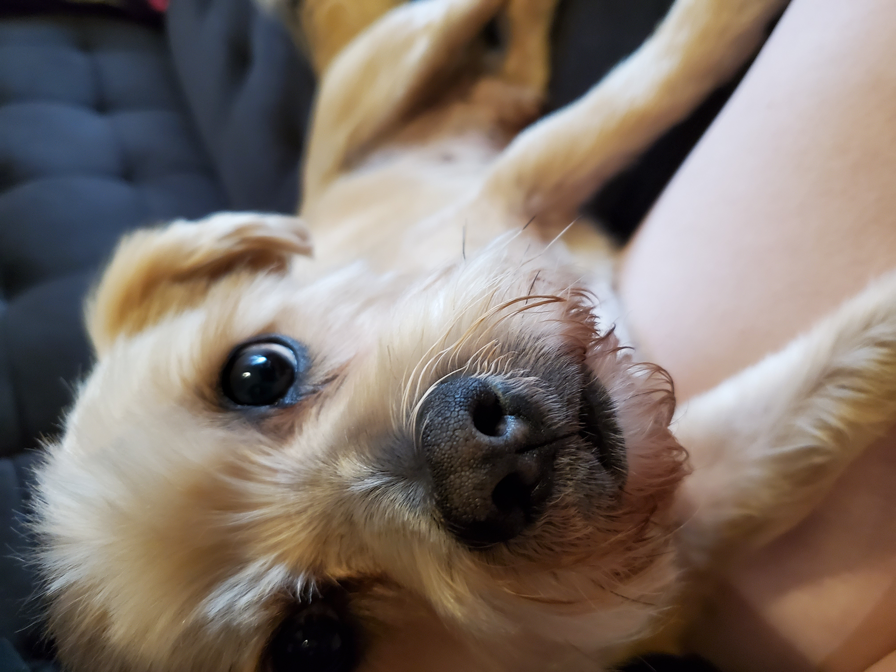

Hello! I am a software engineer in the making and am practicing making websites. My inspiration for this project comes from my dog, Larry. He is the cuh-UTEST little dude. But don't take my word for it:
My goal is to make a few linked pages about Larry, starting at the beginning. Because where else?
I wanted a puppy ever since I learned what puppies are. I relentlessly pestered my mom for one and she always said no (obviously trying to RUIN my LIFE-UH). Then, in 2011, two big life events were happening -- I was turning 18 and graduating from highschool in the same month. I figured this was my best opportunity; if I only asked for one thing for both occasions, there's no way my mom could say no. I even started talking about the puppy as if she had said yes (which she refers to as my jedi mind trick). To my dismay, in April of 2011 my mom got me a new phone and said it was a birthday present. While grateful for the phone, I was disappointed as this meant I would not be getting a puppy as a graduation+birthday gift. Ending on a cliffhanger, you say? Don't be silly, find out if I get the puppy or not!
The main thing that I did was pick Larry's name months before I got him. Funnily enough, the inspiration for his name came from CoD: Black Ops. We used to play games against the AI, and enemies were named after people on your friends list. When there were more AI in the game than friends on your list (always the case for me), the game would randomly generate a name. So when most enemies had names like "CompactSniper" and "ColonelPepper", there was one AI that was always named "Larry". Something about the name always hit my funny bone. Thus, during the waiting period between asking for a puppy and the month of June I would say things like "Larry's going to sleep in my room" and "I'm going to teach Larry so many cool tricks".